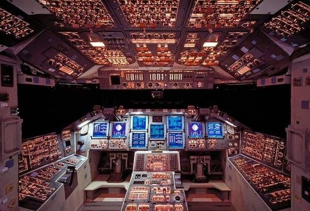
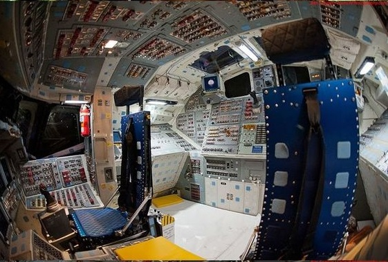
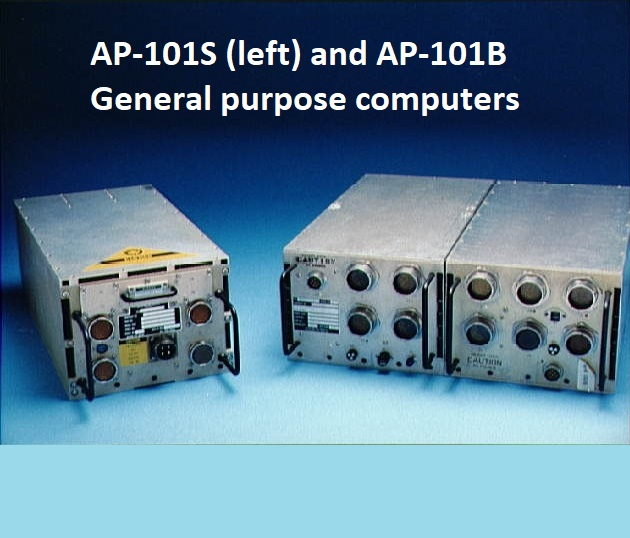
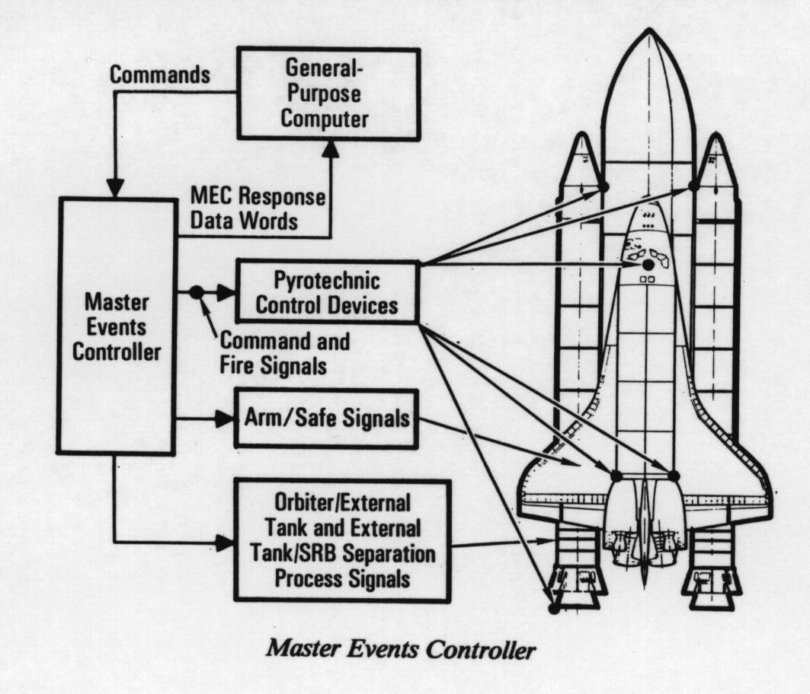

The Space Shuttle Avionics system controls or assists in controlling most of the Shuttle Systems . Its Main Functions Include :
Automatic determination of the vehicle's status and operational readings ; implementation sequencing and control for the solid rocket boosters and external tank during launch and asceent ; performance monitoring , digital data processing ; communications and tracking ; payload and system management ; guidance ; navigation and control (Integrated GPS/INS) and eletrical power distribution for the orbiter , external tank and solid rocket boosters . The Space Shuttle avionics system consists of more than 300 major electronic black boxes through out the vehicle , connected by more than 300 miles of electrical wiring . There are approximately 120,400 wire segments and 6,491 connectors in the vehicle . Total weight of the black boxes , wiring of the black boxes , wirings and connectors is approximately 17,116 Pounds . The Black boxes are connected to a set of five general purpose computers through common party lines called databuses . The black boxes offer dual or triple redundancy for every function .
 The Space Shuttle's fly - by - wire control system was entirely reliant on its main computer , the Data processing system (DPS) . The Data Processing System through the use of various hard ware components and its self contained computer programming (Software) provides the vehicle with this monitoring and control .The DPS Hardware consisted of five general purpose computers (GPC) for computation and control , two magnetic tape , mass memory units(MMU) for large volume bulk storage , a time stored data bus network consisting of serial digital data buses to accomodate the data traffic between the GPCs and Space Shuttle vehicle systems , nineteen orbiter and four solid rocket boosters multiplexers / Demultiplexers to convert and format data from various vehicle systems , three space shuttle main engine interface units to command and SSMEs , four multifunction CRT display systems used by the flight crew to monitor and control the vehicle and payload systems , two data bus isolation amplifiers to interface with the ground support equipment / launch processing system and the solid rocket boosters , two master event controllers and a master timing unit .
 DPS software (System Software and Application Software) programs are written HAL/S (High order assembly language / Shuttle) especially developed for real time space flight applications . The system software is the GPC operating software that controls the interfaces among the computers and the rest of the DPS
The Application software performs the actual duties required to fly and operate the vehicle . It's major functions are :-
(i) Vehicle guidance navigation and control required for launch , ascent to orbit , Maneuvering in orbit entry and landing on runway .
(ii) System management programs with instructions for loading memories in the space shuttle in the main engine computers and for checking the vehicle instrumentation system , aiding in vehicle sub-system checkout , ascertaining that flight crew displays and controls perform properly and updating inertial measurement unit state vectors .
(iii) Payload Processing programs with instructions for controlling and monitoring orbiter payload systems .
(iv) Vehicle checkout programs needed to handle data management , performance monitoring , special processing and display and control processing.
Four of the GPCs were loaded with the primary avionics software system (PASS) which was space shuttle specific software that provided control through all phases of flight . The fifth GPC ran the back-up flight system which used a different program and could control the space shuttle through ascent , orbit and re-entry , but could not support the entire mission . The Original GPC used was IBM AP-101B which used a separate central processing unit (CPU) and input / output processors (IOP) and non-volatile solid state memory . Later from 1991 to 1993 the orbital vehichles were upgraded to 101-S , which combined the CPU and IOP with a single unit which reduced volume and weight of the computers , which had improved memory and processing capabilities . Earlier missions brought the grid compass , one of the laptop computers as the Portable general support computer (PGSC) , that could integrate with the orbiter vehicles computers and communication suite as well as monitor Scientific and payload data . But the later missions brought Apple and Intel Laptops .